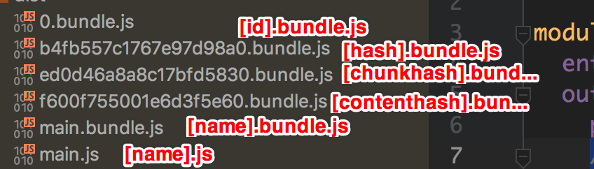
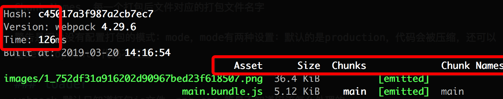

今日鸡汤： 优秀的工程师 = 主人翁意识 + 追求卓越的精神
写这篇文章的目的是因为webpack4的出现，并且发现以前有很多东西其实一直都在用，但是没有很细的了解里面的东西，本篇文章主要梳理下相关内容。
想要把自己知道的和不知道的，都系统的总结下。
webpack模块打包工具 - a static module bundler
webpack4如何做到更快
需要nodejs版本新 + webpack版本新
webpack 会利用新版 Nodejs 的特性进行更好的优化
–save-dev = -D
1 | npm install webpack webpack-cli --save-dev |
npx和npm的区别
npx会去当前文件夹下的 node_modules 找命令
npm会去全局找命令，如果找不到，才会去当前的node_modules下
如1
2npm webpack -v 是全局的 webpack 版本
npx webpack -v 是当前项目内使用的 webpack 版本
安装某个版本的webpack
1 | // 查看webpack的历史version信息 |
webpack查询配置路径
webpack 需要指定入口文件
npx webpack index.js入口文件为index.js,webpack4以index.js作为入口。- 若不指定入口，
webpack则取找webpack.config.js文件，读取配置文件中的entry。 - 若不指定入口并且没有
webpack.config.js文件，则报错。 - 如果不想用
webpack.config.js，可以使用npx webpack --config webpackconfig.js来指定配置文件。
最简单的 demo:1
2
3
4
5
6
7
8
9
10
11
12
13
14
15
16
17const path = require('path');
module.exports = {
entry: './path/to/my/entry/file.js',
output: {
// 注意这里是绝对路径，webpack4默认是这个dist路径，如果你不写的话
path: path.resolve(__dirname, 'dist'),
// filename 可以指定生成的文件的名称
filename: 'my-first-webpack.bundle.js',
// filename: '[name].bundle.js',
// filename: '[name].js',
// filename: '[hash].bundle.js' //b4
// filename: '[id].bundle.js'
// filename: '[chunkhash].bundle.js',ed
// filename: '[contenthash].bundle.js'
}
};
如下分别是对应的生成结果：

为什么 [name].js生成的对应是 main.js呢？因为entry: 'xxx' = entry: {main: 'xxx'}, 省略了名称为 main 的写法。
output还有很多options,可以参照官方文档来看。output
注意一般情况我们不会把 output 里的 filename 直接设置为 bundle.js,这样如果又多个entry,最后都被命名为 bundle.js，webpack就会报错了。一般情况下，我们就设置为[name].bundle.js就挺好的。
output 里面还有我们经常用到的 publicPath, 用于设置静态资源的地址，比如我们可以设置它为cdn的域名路径。//cdn.com/h5,最后html文件中生成的路径可能就是<script type="text/javascript" src="//cdn.com/h5/main.bundle.js"></script>这种我们需要的路径。
webpack4 mode
mode: development/production 主要区别在是否压缩。如果配置中不写，默认是 production,并且会有 warning。
webpack打包后控制台信息：
hash 本次打包的唯一一个hash值
Version webpack的版本
Time 打包耗时
Asset 打包后的文件名
Size 打包后的文件大小
Chunks 打包后文件对应的id
Chunk Names 每一个打包后文件对应的打包文件名字

有的时候有警告是因为没有配置打包的模式：mode，mode有两种设置：默认的是production，代码会被压缩，还可以是development，代码不压缩
loader
webpack 默认只知道打包js文件，png,css 等是不知道应该怎么处理的。
所以对于 png, css, vue 这一类的模块资源，我们就得在webpack配置中，告诉webpack怎么打包。具体就是放在 module 里，配置相关的rule，然后用相关的 loader 去处理。
因此可以理解为：loader就是打包方案，对非js结尾模块，要用loader进行处理。
处理图片的loader
这里举例两种处理图片的loader, file-loader及url-loader
1 | module.exports = { |
更多相关配置，要参考 webpack loader 一节。标注两个经常用到的点：
name标明你要生成图片的名称，比如[name].[ext]就是原文件名输出，[name]_[hash].[ext]就是名称+hash后的文件，如：1_752df31a916202d90967bed23f618507.png。outputPath标明你要把文件放在哪个目录下，如dist/images下。设置这里outputPath还可以是个函数。如下
1 | outputPath: (url, resourcePath, context) => { |
里面 file-loader 做了两件事情：
- 移动文件到dist文件下
- 得到图片名称，作为返回值，返回名称
注意file-loader不一定是针对图片，对txt等其他文件也是一样的。
还有一个是 url-loader, url-loader 和 file-loader。
url-loader可以把图片转换成base64编码，并放于js中。这样的好处是节约了一次http请求，坏处是如果图片太大，转换成的base64太大，就会导致js太大，影响页面的加载和执行。
因此正确使用 url-loader 的形式是如果图片很小，比如是个 icon, 那么用 url-loader 就太适合了。
比如我们可以这么来写：
1 | module: { |
如果文件比 20k 要大， 则url-loader会自动使用file-loader来处理文件。
处理css的loader
1 | module.exports = { |
注意：loader的执行顺序是从下到上，从右到左，如上面就是先执行 postcss-loader, 最后执行style-loader。其中区别解释如下：
style-loader用来把 style 节点添加到 dom 上的，即负责把css代码挂载到中间。css-loader用来把一个或多个css文件合并成一段css代码，比如有多个css文件，可以合成一个。postcss-loader可以用来帮我们做css添加前缀，或者压缩优化css等工作。一般postcss-loader需要建立一个postcss.config.js用来写相关配置。如：
1 | module.exports = { |
解释css-loader部分参数的含义：
importLoaders: 2保证不管是js中引用css文件，还是js中引用js文件，都要从上到下依次进行使用loader, 而不是只有index里面import的css被从下到上执行，而css里面引用的文件不会从下到上执行。modules: true使css支持模块化引用，如不想让某个css文件作用于全局。1
2
3import style from './1.css'
img.classList.add(style.avatar)
这样，style中的样式可以只针对某些地方生效，而不是全局生效。其实我最经常用的是 import './1.css' 作用于全局,因为我们的样式都是重构统一给到的。
处理字体文件的loader
当我们再css、sass文件中引入了字体文件，如eot, ttf, svg,如果我们不告诉webpack，webpack会报错1
2
3
4@font-face {
font-family: "iconfont",
src: url('./font/iconfont.eot')
}
因为webpack并不知道如何去处理并引入这些文件，所以我们需要给这些结尾的文件（字体），使用 file-loader，如：1
2
3
4
5
6{
test: /\.(eot|ttf|svg)$/,
use: {
loader: 'file-loader'
}
}
除了上述loader,还有其他如 xml-loader, cvs-loader 等,可以参考着一节。loader1
2
3
4
5
6
7
8
9
10
11
12
13
14
15
16
17
18
19
20
21
22
23
24
25
26
27
28
29
30
31
32
33
34
35
36
37
38
39
40
41
42
43
44 const path = require('path');
module.exports = {
entry: './src/index.js',
output: {
filename: 'bundle.js',
path: path.resolve(__dirname, 'dist')
},
- module: {
- rules: [
- {
- test: /\.css$/,
- use: [
- 'style-loader',
- 'css-loader'
- ]
- },
- {
- test: /\.(png|svg|jpg|gif)$/,
- use: [
- 'file-loader'
- ]
- },
- {
- test: /\.(woff|woff2|eot|ttf|otf)$/,
- use: [
- 'file-loader'
- ]
- },
- {
- test: /\.(csv|tsv)$/,
- use: [
- 'csv-loader'
- ]
- },
- {
- test: /\.xml$/,
- use: [
- 'xml-loader'
- ]
- }
- ]
- }
};
总结
本篇主要跟 loader 相关。理解webpack是任何时候可以把任何类型的文件都当成模块去处理。
理解 loader 是为了告诉 webpack 什么样的文件，应该用什么样的东西处理。
即loader 是打包方案，是告诉 webpack 非 js 结尾的应该怎么处理。